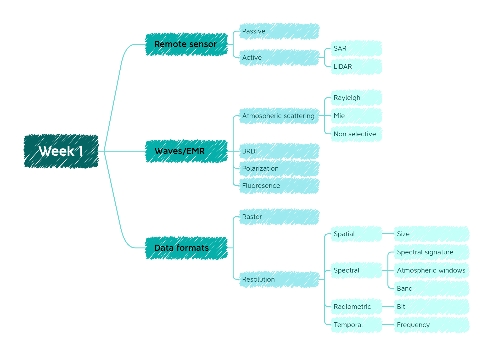
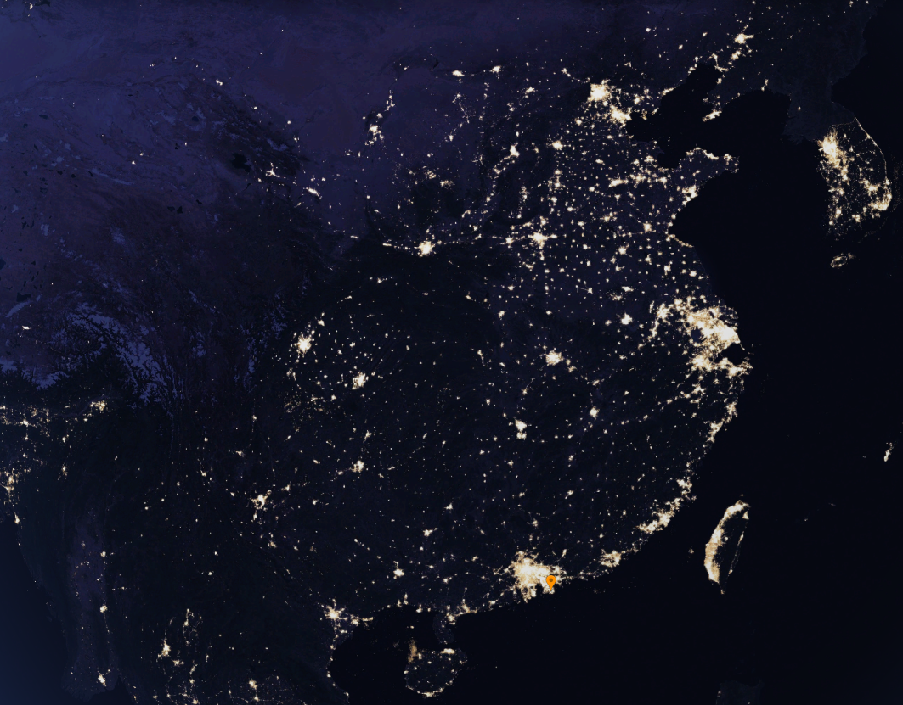

1 Week 1 Introduction of remote sensing
1.1 Summary

The main content of this week is basic introduction of remote sensing, which gave us basic knowledge and awareness of remote sensing. To be specific, this week gave us the basic concepts of remote sensor devices, electromagnetic waves and data format.
1.1.1 Remote sensor
The definition of remote sensing is acquire information from a distance(Earth Science Data Systems 2019). The tools which acquire information are called remote sensor. Sensors can be divided into many categories depending on the different classification criteria. If we classify remote sensing platforms according to their altitude, they can be broadly divided into space remote sensing, aerial remote sensing and ground remote sensing. The devices of space remote sensing include artificial satellites, manned spacecraft, space shuttles and space stations. Aerial remote sensing refers to the observation of the Earth from airborne platforms such as aircraft, spacecraft and balloons. Ground-based remote sensing refers to remote sensing technology systems where the sensors are set on the ground. According to the electromagnetic spectrum used, there are three types of remote sensing: visible, thermal infrared and microwave. In terms of working type, we can classify them into active remote sensing and passive remote sensing(Huang, Yu, and Huang 2010).
Considering that this week we mainly focus about the active sensors and passive sensors, in this case, I will mainly talk about above two sensors.
The huge difference between these two type of sensors is whether they have energy for illumination. Passive sensors cannot emit anything but detect reflected energy from sun. The power and frequency bands measured by passive sensors are determined by properties of the substance being measured. These frequencies and information cannot be changed nor duplicated in other bands(Mai 2012). As for active sensors, they send out signal by themselves and then measured when it is reflected by the surface of earth(Bhattacharyya, n.d.).
1.1.1.1 Benefits and reflections of remote sensor devices
| Active sensor | Passive sensor | ||
|---|---|---|---|
| Advantage | Disadvantage | Advantage | Disadvantage |
| All weather working | Require a large amount of power | Cannot be detected | Most of them only can work in the day time |
| Send out signal by itself | High cost | Low power consumption | Influence by weather(e.g. cloudy) |
| Obtain measurements anytime | Radar signals contain no spectral characteristics. | Easy to use for visual interpretation | |
| Weather, sunlight independent | Pulse power can be influenced or interfered by other radiation sources |
See Table 1.1 for the advantages and disadvantages of sensor devices.
1.1.2 Waves
The energy emitted by the sun and passive sensors is essentially electromagnetic waves. The wavelengths of electromagnetic waves can be classified as infrared, visible or ultraviolet light. We rely on this energy all the time in our lives, from the radio to sending text messages, electromagnetic waves are everywhere(NASA Official, n.d.).
1.1.2.1 Scattering
The sun, as a full-spectrum source of energy, continuously transmits electromagnetic waves to the earth. Due to the atmosphere, before the solar radiation reaches the ground, some of its energy is absorbed, some are scattered and some are emitted. It is important to note that the atmosphere does not absorb and scatter radiation of different wavelengths to the same extent. In the visible wavelength range, the atmosphere is primarily responsible for scattering effects. The mode of scattering is related to the wavelength of the electromagnetic wave, the diameter of the atmospheric molecules and the size of the aerosol particles. The main types of scattering are Rayleigh scattering, Mie scattering and non-selective scattering. Rayleigh scattering occurs when the diameter of the particles in the atmosphere is much smaller than the wavelength of the electromagnetic wave, and the shorter the wavelength the stronger the scattering, which is why the sky is blue in cloudless weather with good visibility. Mie scattering occurs when the wavelength is similar to the size of the scattering particles and is strongly influenced by the weather. When the size of the particles in the atmosphere is much larger than the wavelength, fog-selective scattering occurs, and clouds are an example of unselective scattering (which is why clouds are white: all visible light is involved in scattering)See Figure 1.2 and for scattering(Zhan 2001).

There are other effects in the natural environment, and the images presented need to be corrected for various reasons, see Chapter 3 for more details about correction.
1.1.3 Data format
The usual form of storage for remote sensing data is a raster. A raster consists of a series of pixels, each of which has the same size and shape. There are four types of resolution to consider for any data set - radiometric, spatial, spectral and temporal(Earth Science Data Systems 2019). The spatial resolution of a raster is the size (in meters) of each image element, which in turn is related to the ground area represented by the pixel(Wasser, n.d.). Temporal resolution is the minimum time interval between two adjacent remote sensing observations in the same area. The size of the time interval depends mainly on the type of sensor device: a large time interval results in a low temporal resolution and vice versa. The spectral resolution is the smallest wavelength interval that the sensor can resolve when receiving the spectrum of the target radiation. The smaller the interval, the higher the resolution. The different spectral resolution of the sensor on the same feature detection effect has a great difference. Radiation resolution refers to the ability of the sensor to distinguish between subtle changes in the radiation energy of a feature, i.e. the sensitivity of the sensor. The higher the radiometric resolution of a sensor, the stronger its ability to detect small changes in the reflected or emitted radiant energy of a feature. This is expressed in the remote sensing image as a quantitative level of radiation per image element.
1.2 Application
In general, remote sensing data has a wide range of applications in many fields: pollution monitoring, night light of the city (see Figure 1.3 for night light of the city), forest fires, disaster monitoring (see Chapter 4 for remote sensing apply in disaster), these data not only help us in our research but also in our daily work.

Specifically, in the field of ecology, for example, researchers have relied on remote sensing to model biogeochemical cycles and characterise land cover, vegetation biophysical properties, forest structure and fragmentation associated with biodiversity. Changes associated with clearcutting, interfering, tree mortality, acid rain, insect infestation, accidental harvesting, salvage logging, succession and interclass transition rates have been accurately characterized through the accumulation of data over many years(Cohen and Goward 2004).
In horticulture, the use of remote sensing to help collect and update information for scientific management plans and to reduce risk and minimize damage by collecting electromagnetic information to obtain accurate, large-scale information about the Earth’s surface and atmosphere has enabled horticultural crops to continue to play a role in increasing land productivity, creating jobs, increasing exports, improving the economic conditions of farmers and entrepreneurs, and providing food and nutrition security(Usha and Singh 2013).
Wildfires are a great danger to entire ecosystems, so understanding the dynamics associated with wildfires, such as risk, spatial distribution and impacts, is important for a clear understanding of their ecological impacts. Based on the inherently low-cost, multi-temporal nature of remote sensing, it has been applied to fire risk mapping, fuel mapping, active fire detection, area burned estimation, and burn severity assessment. It greatly improves the efficiency of the analysis and makes a significant contribution to prevention as well as post-disaster restoration(Szpakowski and Jensen 2019).
Remote sensing is not only used on a large spatial scale but also plays an important role in engineering projects, where the use of LiDAR for building scanning and modelling has resulted in significant time and economic savings (see Chapter 2 for more details about the application of LiDAR).
1.3 Reflection
The most important aspect of this week’s content was that it gave us a basic understanding of remote sensing. From the devices used to acquire remote sensing data, to the propagation of electromagnetic waves, to the final data and resolution, these aspects gave us a basic understanding of the whole process of data collection and collation and laid a foundation for the subsequent content. The most useful part for me of the week is practical. By taking practical that Andy provided I got fully understanding of bands.